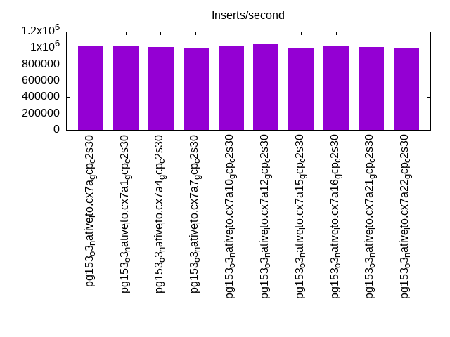

Introduction
This is a report for the insert benchmark with 160M docs and 8 client(s). It is generated by scripts (bash, awk, sed) and Tufte might not be impressed. An overview of the insert benchmark is here and a short update is here. Below, by DBMS, I mean DBMS+version.config. An example is my8020.c10b40 where my means MySQL, 8020 is version 8.0.20 and c10b40 is the name for the configuration file.
The test server is a c2-standard-30 with 15 cores, hyperthreads disabled, 120G RAM and XFS with SW RAID 0 across 4 NVMe SSD. The benchmark was run with 8 clients and there were 1 or 3 connections per client (1 for queries or inserts without rate limits, 1+1 for rate limited inserts+deletes). It uses 8 tables, 1 per client. It loads 20M rows per table without secondary indexes, creates secondary indexes, then inserts 100M rows per table with a delete per insert to avoid growing the table. It then does 3 read+write tests for 3600s each that do queries as fast as possible with 100, 500 and then 1000 inserts/second/client concurrent with the queries. There are also deletes to match the inserts and avoid growing the table. The database is cached by Postgres. Clients and the DBMS share one server. The per-database configs are in the per-database subdirectories here.
The tested DBMS are:
- pg153_o3_native_lto.cx7a_gcp_c2s30 - Postgres 15.3, the cx7a_gcp_c2s30 config and the build used: -O3 -march=native -mtune=native -flto
- pg153_o3_native_lto.cx7a1_gcp_c2s30 - Postgres 15.3, the cx7a1_gcp_c2s30 config and the build used: -O3 -march=native -mtune=native -flto, adds wal_compression=lz4
- pg153_o3_native_lto.cx7a4_gcp_c2s30 - Postgres 15.3, the cx7a4_gcp_c2s30 config and the build used: -O3 -march=native -mtune=native -flto, adds checkpoint_timeout=1800s
- pg153_o3_native_lto.cx7a7_gcp_c2s30 - Postgres 15.3, the cx7a7_gcp_c2s30 config and the build used: -O3 -march=native -mtune=native -flto, adds max_wal_size=16GB
- pg153_o3_native_lto.cx7a10_gcp_c2s30 - Postgres 15.3, the cx7a10_gcp_c2s30 config, compiled with -O3 -march=native -mtune=native -flto, adds autovacuum_work_mem=256MB
- pg153_o3_native_lto.cx7a12_gcp_c2s30 - Postgres 15.3, the cx7a12_gcp_c2s30 config, compiled with -O3 -march=native -mtune=native -flto, adds wal_buffers=64MB
- pg153_o3_native_lto.cx7a15_gcp_c2s30 - Postgres 15.3, the cx7a15_gcp_c2s30 config, compiled with -O3 -march=native -mtune=native -flto, adds max_wal_size=32GB
- pg153_o3_native_lto.cx7a16_gcp_c2s30 - Postgres 15.3, the cx7a16_gcp_c2s30 config, compiled with -O3 -march=native -mtune=native -flto, adds autovacuum_vacuum_scale_factor=0.05 autovacuum_vacuum_insert_scale_factor=0.05
- pg153_o3_native_lto.cx7a21_gcp_c2s30 - Postgres 15.3, the cx7a21_gcp_c2s30 config, compiled with -O3 -march=native -mtune=native -flto, combines a1, a4, a10 and a16
- pg153_o3_native_lto.cx7a22_gcp_c2s30 - Postgres 15.3, the cx7a22_gcp_c2s30 config, compiled with -O3 -march=native -mtune=native -flto, combines a4, a10 and a16
Contents
- Summary
- l.i0: load without secondary indexes
- l.x: create secondary indexes
- l.i1: continue load after secondary indexes created
- q100.1: range queries with 100 insert/s per client
- q500.1: range queries with 500 insert/s per client
- q1000.1: range queries with 1000 insert/s per client
Summary
The numbers are inserts/s for l.i0 and l.i1, indexed docs (or rows) /s for l.x and queries/s for q*.2. The values are the average rate over the entire test for inserts (IPS) and queries (QPS). The range of values for IPS and QPS is split into 3 parts: bottom 25%, middle 50%, top 25%. Values in the bottom 25% have a red background, values in the top 25% have a green background and values in the middle have no color. A gray background is used for values that can be ignored because the DBMS did not sustain the target insert rate. Red backgrounds are not used when the minimum value is within 80% of the max value.
| dbms | l.i0 | l.x | l.i1 | q100.1 | q500.1 | q1000.1 |
|---|---|---|---|---|---|---|
| pg153_o3_native_lto.cx7a_gcp_c2s30 | 1019108 | 2134667 | 138768 | 116476 | 111377 | 107936 |
| pg153_o3_native_lto.cx7a1_gcp_c2s30 | 1019108 | 2287143 | 134273 | 115997 | 110379 | 106366 |
| pg153_o3_native_lto.cx7a4_gcp_c2s30 | 1012658 | 2106579 | 136565 | 118040 | 113389 | 108515 |
| pg153_o3_native_lto.cx7a7_gcp_c2s30 | 1006289 | 2425758 | 108284 | 116342 | 110753 | 105171 |
| pg153_o3_native_lto.cx7a10_gcp_c2s30 | 1019108 | 2134667 | 153935 | 118059 | 112370 | 109517 |
| pg153_o3_native_lto.cx7a12_gcp_c2s30 | 1052632 | 2106579 | 154410 | 118787 | 113830 | 109404 |
| pg153_o3_native_lto.cx7a15_gcp_c2s30 | 1000000 | 2354412 | 139689 | 117862 | 112106 | 108261 |
| pg153_o3_native_lto.cx7a16_gcp_c2s30 | 1019108 | 2134667 | 271003 | 118457 | 114614 | 112476 |
| pg153_o3_native_lto.cx7a21_gcp_c2s30 | 1012658 | 2287143 | 279427 | 117518 | 114826 | 112689 |
| pg153_o3_native_lto.cx7a22_gcp_c2s30 | 1006289 | 2106579 | 267112 | 117159 | 113983 | 111897 |
This table has relative throughput, throughput for the DBMS relative to the DBMS in the first line, using the absolute throughput from the previous table. Values less than 0.95 have a yellow background. Values greater than 1.05 have a blue background.
| dbms | l.i0 | l.x | l.i1 | q100.1 | q500.1 | q1000.1 |
|---|---|---|---|---|---|---|
| pg153_o3_native_lto.cx7a_gcp_c2s30 | 1.00 | 1.00 | 1.00 | 1.00 | 1.00 | 1.00 |
| pg153_o3_native_lto.cx7a1_gcp_c2s30 | 1.00 | 1.07 | 0.97 | 1.00 | 0.99 | 0.99 |
| pg153_o3_native_lto.cx7a4_gcp_c2s30 | 0.99 | 0.99 | 0.98 | 1.01 | 1.02 | 1.01 |
| pg153_o3_native_lto.cx7a7_gcp_c2s30 | 0.99 | 1.14 | 0.78 | 1.00 | 0.99 | 0.97 |
| pg153_o3_native_lto.cx7a10_gcp_c2s30 | 1.00 | 1.00 | 1.11 | 1.01 | 1.01 | 1.01 |
| pg153_o3_native_lto.cx7a12_gcp_c2s30 | 1.03 | 0.99 | 1.11 | 1.02 | 1.02 | 1.01 |
| pg153_o3_native_lto.cx7a15_gcp_c2s30 | 0.98 | 1.10 | 1.01 | 1.01 | 1.01 | 1.00 |
| pg153_o3_native_lto.cx7a16_gcp_c2s30 | 1.00 | 1.00 | 1.95 | 1.02 | 1.03 | 1.04 |
| pg153_o3_native_lto.cx7a21_gcp_c2s30 | 0.99 | 1.07 | 2.01 | 1.01 | 1.03 | 1.04 |
| pg153_o3_native_lto.cx7a22_gcp_c2s30 | 0.99 | 0.99 | 1.92 | 1.01 | 1.02 | 1.04 |
This lists the average rate of inserts/s for the tests that do inserts concurrent with queries. For such tests the query rate is listed in the table above. The read+write tests are setup so that the insert rate should match the target rate every second. Cells that are not at least 95% of the target have a red background to indicate a failure to satisfy the target.
| dbms | q100.1 | q500.1 | q1000.1 |
|---|---|---|---|
| pg153_o3_native_lto.cx7a_gcp_c2s30 | 797 | 3988 | 7976 |
| pg153_o3_native_lto.cx7a1_gcp_c2s30 | 798 | 3987 | 7976 |
| pg153_o3_native_lto.cx7a4_gcp_c2s30 | 798 | 3987 | 7976 |
| pg153_o3_native_lto.cx7a7_gcp_c2s30 | 798 | 3988 | 7976 |
| pg153_o3_native_lto.cx7a10_gcp_c2s30 | 798 | 3987 | 7976 |
| pg153_o3_native_lto.cx7a12_gcp_c2s30 | 797 | 3987 | 7978 |
| pg153_o3_native_lto.cx7a15_gcp_c2s30 | 797 | 3987 | 7976 |
| pg153_o3_native_lto.cx7a16_gcp_c2s30 | 797 | 3988 | 7976 |
| pg153_o3_native_lto.cx7a21_gcp_c2s30 | 797 | 3988 | 7976 |
| pg153_o3_native_lto.cx7a22_gcp_c2s30 | 798 | 3987 | 7978 |
| target | 800 | 4000 | 8000 |
l.i0
l.i0: load without secondary indexes. Graphs for performance per 1-second interval are here.
Average throughput:
Insert response time histogram: each cell has the percentage of responses that take <= the time in the header and max is the max response time in seconds. For the max column values in the top 25% of the range have a red background and in the bottom 25% of the range have a green background. The red background is not used when the min value is within 80% of the max value.
| dbms | 256us | 1ms | 4ms | 16ms | 64ms | 256ms | 1s | 4s | 16s | gt | max |
|---|---|---|---|---|---|---|---|---|---|---|---|
| pg153_o3_native_lto.cx7a_gcp_c2s30 | 97.388 | 2.555 | 0.037 | 0.007 | 0.010 | 0.002 | 0.459 | ||||
| pg153_o3_native_lto.cx7a1_gcp_c2s30 | 97.496 | 2.440 | 0.043 | 0.008 | 0.010 | 0.003 | 0.495 | ||||
| pg153_o3_native_lto.cx7a4_gcp_c2s30 | 97.404 | 2.537 | 0.039 | 0.007 | 0.012 | 0.001 | 0.487 | ||||
| pg153_o3_native_lto.cx7a7_gcp_c2s30 | 97.406 | 2.518 | 0.059 | 0.009 | 0.007 | 0.002 | 0.379 | ||||
| pg153_o3_native_lto.cx7a10_gcp_c2s30 | 97.720 | 2.221 | 0.039 | 0.006 | 0.011 | 0.002 | 0.940 | ||||
| pg153_o3_native_lto.cx7a12_gcp_c2s30 | 97.940 | 2.016 | 0.039 | 0.002 | 0.002 | 0.185 | |||||
| pg153_o3_native_lto.cx7a15_gcp_c2s30 | 97.478 | 2.377 | 0.111 | 0.021 | 0.011 | 0.001 | 0.667 | ||||
| pg153_o3_native_lto.cx7a16_gcp_c2s30 | 97.695 | 2.244 | 0.043 | 0.007 | 0.011 | 0.001 | 0.741 | ||||
| pg153_o3_native_lto.cx7a21_gcp_c2s30 | 97.437 | 2.506 | 0.042 | 0.005 | 0.008 | 0.002 | 0.586 | ||||
| pg153_o3_native_lto.cx7a22_gcp_c2s30 | 97.534 | 2.410 | 0.043 | 0.005 | 0.006 | 0.002 | 0.702 |
Performance metrics for the DBMS listed above. Some are normalized by throughput, others are not. Legend for results is here.
ips qps rps rmbps wps wmbps rpq rkbpq wpi wkbpi csps cpups cspq cpupq dbgb1 dbgb2 rss maxop p50 p99 tag 1019108 0 0 0.0 1009.3 331.7 0.000 0.000 0.001 0.333 85436 75.7 0.084 11 15.3 41.4 0.0 0.459 146438 41169 160m.pg153_o3_native_lto.cx7a_gcp_c2s30 1019108 0 0 0.0 1006.0 332.3 0.000 0.000 0.001 0.334 86092 75.9 0.084 11 15.3 41.4 0.0 0.495 145302 50743 160m.pg153_o3_native_lto.cx7a1_gcp_c2s30 1012658 0 0 0.0 1006.6 332.1 0.000 0.000 0.001 0.336 85914 75.7 0.085 11 15.3 41.4 0.0 0.487 144743 51044 160m.pg153_o3_native_lto.cx7a4_gcp_c2s30 1006289 0 0 0.0 1205.2 324.8 0.000 0.000 0.001 0.330 86175 76.3 0.086 11 15.3 31.4 0.0 0.379 144242 26781 160m.pg153_o3_native_lto.cx7a7_gcp_c2s30 1019108 0 0 0.0 1021.0 339.1 0.000 0.000 0.001 0.341 85703 75.2 0.084 11 15.3 41.4 0.0 0.940 147939 35975 160m.pg153_o3_native_lto.cx7a10_gcp_c2s30 1052632 0 0 0.0 1040.0 347.6 0.000 0.000 0.001 0.338 87632 77.9 0.083 11 15.3 41.4 0.0 0.185 146640 112977 160m.pg153_o3_native_lto.cx7a12_gcp_c2s30 1000000 0 0 0.0 1191.3 368.1 0.000 0.000 0.001 0.377 83337 74.0 0.083 11 15.3 42.7 0.0 0.667 145541 45051 160m.pg153_o3_native_lto.cx7a15_gcp_c2s30 1019108 0 0 0.0 1008.7 335.1 0.000 0.000 0.001 0.337 85574 75.5 0.084 11 15.3 41.4 0.0 0.741 145940 32763 160m.pg153_o3_native_lto.cx7a16_gcp_c2s30 1012658 0 0 0.0 1004.9 330.0 0.000 0.000 0.001 0.334 83867 76.9 0.083 11 15.3 41.4 0.0 0.586 145341 45568 160m.pg153_o3_native_lto.cx7a21_gcp_c2s30 1006289 0 0 0.0 1007.2 330.4 0.000 0.000 0.001 0.336 83752 77.2 0.083 12 15.3 41.4 0.0 0.702 145142 59334 160m.pg153_o3_native_lto.cx7a22_gcp_c2s30
l.x
l.x: create secondary indexes.
Average throughput:
Performance metrics for the DBMS listed above. Some are normalized by throughput, others are not. Legend for results is here.
ips qps rps rmbps wps wmbps rpq rkbpq wpi wkbpi csps cpups cspq cpupq dbgb1 dbgb2 rss maxop p50 p99 tag 2134667 0 0 0.0 1604.3 645.8 0.000 0.000 0.001 0.310 20150 35.6 0.009 3 29.4 68.3 0.1 0.001 NA NA 160m.pg153_o3_native_lto.cx7a_gcp_c2s30 2287143 0 0 0.0 1311.8 561.0 0.000 0.000 0.001 0.251 7035 38.7 0.003 3 29.4 63.3 0.1 0.001 NA NA 160m.pg153_o3_native_lto.cx7a1_gcp_c2s30 2106579 0 0 0.0 1551.9 637.8 0.000 0.000 0.001 0.310 18482 35.9 0.009 3 29.4 68.3 0.1 0.001 NA NA 160m.pg153_o3_native_lto.cx7a4_gcp_c2s30 2425758 0 0 0.0 1588.4 529.4 0.000 0.000 0.001 0.223 26496 40.4 0.011 2 29.4 45.5 0.1 0.001 NA NA 160m.pg153_o3_native_lto.cx7a7_gcp_c2s30 2134667 0 0 0.0 1562.0 659.1 0.000 0.000 0.001 0.316 19995 35.1 0.009 2 29.4 68.3 0.1 0.001 NA NA 160m.pg153_o3_native_lto.cx7a10_gcp_c2s30 2106579 0 0 0.0 1535.9 646.4 0.000 0.000 0.001 0.314 18826 35.2 0.009 3 29.4 68.3 0.1 0.001 NA NA 160m.pg153_o3_native_lto.cx7a12_gcp_c2s30 2354412 0 0 0.0 1727.1 574.1 0.000 0.000 0.001 0.250 23764 40.1 0.010 3 29.4 61.5 0.1 0.001 NA NA 160m.pg153_o3_native_lto.cx7a15_gcp_c2s30 2134667 0 0 0.0 1560.9 656.3 0.000 0.000 0.001 0.315 20619 35.6 0.010 3 29.4 68.3 0.1 0.001 NA NA 160m.pg153_o3_native_lto.cx7a16_gcp_c2s30 2287143 0 0 0.0 1290.0 553.1 0.000 0.000 0.001 0.248 6896 39.2 0.003 3 29.4 63.3 0.1 0.002 NA NA 160m.pg153_o3_native_lto.cx7a21_gcp_c2s30 2106579 0 0 0.0 1552.2 643.5 0.000 0.000 0.001 0.313 18989 35.9 0.009 3 29.4 68.3 0.1 0.001 NA NA 160m.pg153_o3_native_lto.cx7a22_gcp_c2s30
l.i1
l.i1: continue load after secondary indexes created. Graphs for performance per 1-second interval are here.
Average throughput:
Insert response time histogram: each cell has the percentage of responses that take <= the time in the header and max is the max response time in seconds. For the max column values in the top 25% of the range have a red background and in the bottom 25% of the range have a green background. The red background is not used when the min value is within 80% of the max value.
| dbms | 256us | 1ms | 4ms | 16ms | 64ms | 256ms | 1s | 4s | 16s | gt | max |
|---|---|---|---|---|---|---|---|---|---|---|---|
| pg153_o3_native_lto.cx7a_gcp_c2s30 | 1.742 | 97.930 | 0.265 | 0.062 | 0.001 | nonzero | 0.280 | ||||
| pg153_o3_native_lto.cx7a1_gcp_c2s30 | 3.553 | 96.372 | 0.062 | 0.012 | 0.001 | nonzero | 0.313 | ||||
| pg153_o3_native_lto.cx7a4_gcp_c2s30 | 4.377 | 95.244 | 0.309 | 0.070 | 0.001 | nonzero | 0.272 | ||||
| pg153_o3_native_lto.cx7a7_gcp_c2s30 | 0.810 | 96.149 | 1.946 | 1.090 | 0.006 | nonzero | 0.289 | ||||
| pg153_o3_native_lto.cx7a10_gcp_c2s30 | 50.878 | 48.840 | 0.231 | 0.051 | 0.001 | nonzero | 0.672 | ||||
| pg153_o3_native_lto.cx7a12_gcp_c2s30 | 50.264 | 49.572 | 0.108 | 0.053 | 0.002 | nonzero | 0.310 | ||||
| pg153_o3_native_lto.cx7a15_gcp_c2s30 | 36.244 | 62.401 | 1.129 | 0.226 | 0.002 | 0.235 | |||||
| pg153_o3_native_lto.cx7a16_gcp_c2s30 | 37.748 | 61.376 | 0.698 | 0.177 | 0.001 | 0.145 | |||||
| pg153_o3_native_lto.cx7a21_gcp_c2s30 | 35.103 | 64.510 | 0.339 | 0.048 | nonzero | 0.187 | |||||
| pg153_o3_native_lto.cx7a22_gcp_c2s30 | 32.723 | 66.403 | 0.697 | 0.176 | nonzero | nonzero | 0.458 |
Delete response time histogram: each cell has the percentage of responses that take <= the time in the header and max is the max response time in seconds. For the max column values in the top 25% of the range have a red background and in the bottom 25% of the range have a green background. The red background is not used when the min value is within 80% of the max value.
| dbms | 256us | 1ms | 4ms | 16ms | 64ms | 256ms | 1s | 4s | 16s | gt | max |
|---|---|---|---|---|---|---|---|---|---|---|---|
| pg153_o3_native_lto.cx7a_gcp_c2s30 | 83.678 | 2.417 | 2.165 | 6.631 | 5.108 | 0.001 | 0.217 | ||||
| pg153_o3_native_lto.cx7a1_gcp_c2s30 | 83.128 | 2.967 | 2.035 | 7.228 | 4.642 | 0.001 | 0.253 | ||||
| pg153_o3_native_lto.cx7a4_gcp_c2s30 | 83.578 | 2.502 | 2.163 | 6.811 | 4.946 | 0.001 | nonzero | 0.274 | |||
| pg153_o3_native_lto.cx7a7_gcp_c2s30 | 80.806 | 3.264 | 1.853 | 7.534 | 6.521 | 0.022 | nonzero | 0.267 | |||
| pg153_o3_native_lto.cx7a10_gcp_c2s30 | 83.360 | 3.040 | 2.530 | 7.082 | 3.987 | 0.001 | nonzero | 0.679 | |||
| pg153_o3_native_lto.cx7a12_gcp_c2s30 | 83.658 | 2.992 | 2.181 | 7.310 | 3.853 | 0.006 | nonzero | 0.318 | |||
| pg153_o3_native_lto.cx7a15_gcp_c2s30 | 81.336 | 4.293 | 2.110 | 7.726 | 4.531 | 0.003 | 0.233 | ||||
| pg153_o3_native_lto.cx7a16_gcp_c2s30 | 77.957 | 8.996 | 10.550 | 2.403 | 0.094 | nonzero | 0.144 | ||||
| pg153_o3_native_lto.cx7a21_gcp_c2s30 | 76.980 | 9.905 | 11.409 | 1.685 | 0.021 | nonzero | 0.189 | ||||
| pg153_o3_native_lto.cx7a22_gcp_c2s30 | 77.848 | 9.021 | 10.874 | 2.166 | 0.091 | nonzero | nonzero | 0.458 |
Performance metrics for the DBMS listed above. Some are normalized by throughput, others are not. Legend for results is here.
ips qps rps rmbps wps wmbps rpq rkbpq wpi wkbpi csps cpups cspq cpupq dbgb1 dbgb2 rss maxop p50 p99 tag 138768 0 50 0.4 1479.3 178.2 0.000 0.003 0.011 1.315 63281 65.6 0.456 71 48.9 119.0 0.0 0.280 4295 1798 160m.pg153_o3_native_lto.cx7a_gcp_c2s30 134273 0 3 0.0 1403.7 145.0 0.000 0.000 0.010 1.106 60830 63.5 0.453 71 48.8 117.0 0.0 0.313 3596 1898 160m.pg153_o3_native_lto.cx7a1_gcp_c2s30 136565 0 53 0.4 1441.6 173.9 0.000 0.003 0.011 1.304 62649 64.3 0.459 71 48.8 118.8 0.0 0.272 3947 1798 160m.pg153_o3_native_lto.cx7a4_gcp_c2s30 108284 0 4 0.0 18108.3 840.1 0.000 0.000 0.167 7.944 48501 60.0 0.448 83 48.6 64.6 0.0 0.289 3896 1199 160m.pg153_o3_native_lto.cx7a7_gcp_c2s30 153935 0 60 0.5 1680.7 198.4 0.000 0.003 0.011 1.320 68348 64.7 0.444 63 49.0 119.1 0.0 0.672 4645 2049 160m.pg153_o3_native_lto.cx7a10_gcp_c2s30 154410 0 58 0.5 1629.7 198.9 0.000 0.003 0.011 1.319 68621 65.1 0.444 63 49.0 119.1 0.0 0.310 4845 2099 160m.pg153_o3_native_lto.cx7a12_gcp_c2s30 139689 0 22 0.2 10250.6 594.2 0.000 0.001 0.073 4.356 60006 64.8 0.430 70 48.8 80.9 0.0 0.235 4545 1798 160m.pg153_o3_native_lto.cx7a15_gcp_c2s30 271003 0 101 0.8 1770.8 282.7 0.000 0.003 0.007 1.068 103151 73.1 0.381 40 41.3 111.4 0.0 0.145 42454 4147 160m.pg153_o3_native_lto.cx7a16_gcp_c2s30 279427 0 13 0.1 1428.5 224.4 0.000 0.000 0.005 0.822 104169 76.3 0.373 41 41.3 111.4 0.0 0.187 42354 7891 160m.pg153_o3_native_lto.cx7a21_gcp_c2s30 267112 0 96 0.7 1697.8 275.9 0.000 0.003 0.006 1.058 101535 73.7 0.380 41 41.6 111.6 0.0 0.458 41657 4945 160m.pg153_o3_native_lto.cx7a22_gcp_c2s30
q100.1
q100.1: range queries with 100 insert/s per client. Graphs for performance per 1-second interval are here.
Average throughput:

Query response time histogram: each cell has the percentage of responses that take <= the time in the header and max is the max response time in seconds. For max values in the top 25% of the range have a red background and in the bottom 25% of the range have a green background. The red background is not used when the min value is within 80% of the max value.
| dbms | 256us | 1ms | 4ms | 16ms | 64ms | 256ms | 1s | 4s | 16s | gt | max |
|---|---|---|---|---|---|---|---|---|---|---|---|
| pg153_o3_native_lto.cx7a_gcp_c2s30 | 99.995 | 0.004 | 0.001 | nonzero | 0.015 | ||||||
| pg153_o3_native_lto.cx7a1_gcp_c2s30 | 99.995 | 0.004 | 0.001 | nonzero | 0.008 | ||||||
| pg153_o3_native_lto.cx7a4_gcp_c2s30 | 99.996 | 0.003 | 0.001 | nonzero | 0.008 | ||||||
| pg153_o3_native_lto.cx7a7_gcp_c2s30 | 99.995 | 0.004 | 0.001 | nonzero | 0.006 | ||||||
| pg153_o3_native_lto.cx7a10_gcp_c2s30 | 99.995 | 0.004 | 0.001 | nonzero | nonzero | 0.021 | |||||
| pg153_o3_native_lto.cx7a12_gcp_c2s30 | 99.995 | 0.004 | 0.001 | nonzero | 0.008 | ||||||
| pg153_o3_native_lto.cx7a15_gcp_c2s30 | 99.995 | 0.004 | 0.001 | nonzero | 0.009 | ||||||
| pg153_o3_native_lto.cx7a16_gcp_c2s30 | 99.995 | 0.004 | 0.001 | nonzero | 0.008 | ||||||
| pg153_o3_native_lto.cx7a21_gcp_c2s30 | 99.996 | 0.003 | 0.001 | nonzero | 0.004 | ||||||
| pg153_o3_native_lto.cx7a22_gcp_c2s30 | 99.996 | 0.003 | 0.001 | nonzero | 0.011 |
Insert response time histogram: each cell has the percentage of responses that take <= the time in the header and max is the max response time in seconds. For max values in the top 25% of the range have a red background and in the bottom 25% of the range have a green background. The red background is not used when the min value is within 80% of the max value.
| dbms | 256us | 1ms | 4ms | 16ms | 64ms | 256ms | 1s | 4s | 16s | gt | max |
|---|---|---|---|---|---|---|---|---|---|---|---|
| pg153_o3_native_lto.cx7a_gcp_c2s30 | 0.005 | 99.991 | 0.003 | 0.012 | |||||||
| pg153_o3_native_lto.cx7a1_gcp_c2s30 | 0.002 | 99.677 | 0.321 | 0.011 | |||||||
| pg153_o3_native_lto.cx7a4_gcp_c2s30 | 0.205 | 99.793 | 0.002 | 0.013 | |||||||
| pg153_o3_native_lto.cx7a7_gcp_c2s30 | 99.988 | 0.012 | 0.013 | ||||||||
| pg153_o3_native_lto.cx7a10_gcp_c2s30 | 0.137 | 99.859 | 0.003 | 0.015 | |||||||
| pg153_o3_native_lto.cx7a12_gcp_c2s30 | 0.368 | 99.632 | 0.004 | ||||||||
| pg153_o3_native_lto.cx7a15_gcp_c2s30 | 99.997 | 0.003 | 0.008 | ||||||||
| pg153_o3_native_lto.cx7a16_gcp_c2s30 | 0.785 | 99.214 | 0.002 | 0.009 | |||||||
| pg153_o3_native_lto.cx7a21_gcp_c2s30 | 8.606 | 91.276 | 0.118 | 0.005 | |||||||
| pg153_o3_native_lto.cx7a22_gcp_c2s30 | 9.299 | 90.700 | 0.002 | 0.011 |
Delete response time histogram: each cell has the percentage of responses that take <= the time in the header and max is the max response time in seconds. For max values in the top 25% of the range have a red background and in the bottom 25% of the range have a green background. The red background is not used when the min value is within 80% of the max value.
| dbms | 256us | 1ms | 4ms | 16ms | 64ms | 256ms | 1s | 4s | 16s | gt | max |
|---|---|---|---|---|---|---|---|---|---|---|---|
| pg153_o3_native_lto.cx7a_gcp_c2s30 | 50.700 | 29.349 | 19.950 | 0.002 | 0.009 | ||||||
| pg153_o3_native_lto.cx7a1_gcp_c2s30 | 58.682 | 19.151 | 22.135 | 0.031 | 0.012 | ||||||
| pg153_o3_native_lto.cx7a4_gcp_c2s30 | 65.351 | 14.233 | 20.411 | 0.005 | 0.011 | ||||||
| pg153_o3_native_lto.cx7a7_gcp_c2s30 | 59.476 | 19.351 | 21.161 | 0.012 | 0.006 | ||||||
| pg153_o3_native_lto.cx7a10_gcp_c2s30 | 61.530 | 27.865 | 10.602 | 0.002 | 0.002 | 0.016 | |||||
| pg153_o3_native_lto.cx7a12_gcp_c2s30 | 62.814 | 16.130 | 20.849 | 0.207 | 0.012 | ||||||
| pg153_o3_native_lto.cx7a15_gcp_c2s30 | 62.724 | 24.929 | 12.345 | 0.002 | 0.011 | ||||||
| pg153_o3_native_lto.cx7a16_gcp_c2s30 | 56.481 | 34.075 | 9.439 | 0.005 | 0.014 | ||||||
| pg153_o3_native_lto.cx7a21_gcp_c2s30 | 59.547 | 25.849 | 14.556 | 0.049 | 0.005 | ||||||
| pg153_o3_native_lto.cx7a22_gcp_c2s30 | 63.491 | 26.333 | 10.175 | 0.004 |
Performance metrics for the DBMS listed above. Some are normalized by throughput, others are not. Legend for results is here.
ips qps rps rmbps wps wmbps rpq rkbpq wpi wkbpi csps cpups cspq cpupq dbgb1 dbgb2 rss maxop p50 p99 tag 797 116476 0 0.0 1935.7 31.0 0.000 0.000 2.428 39.799 444154 53.1 3.813 68 48.8 86.6 0.0 0.015 14725 14400 160m.pg153_o3_native_lto.cx7a_gcp_c2s30 798 115997 0 0.0 1919.7 27.9 0.000 0.000 2.407 35.809 442096 53.1 3.811 69 48.5 88.5 0.0 0.008 14480 14118 160m.pg153_o3_native_lto.cx7a1_gcp_c2s30 798 118040 0 0.0 293.5 12.4 0.000 0.000 0.368 15.901 449234 52.9 3.806 67 48.8 118.8 0.0 0.008 14725 14464 160m.pg153_o3_native_lto.cx7a4_gcp_c2s30 798 116342 0 0.0 1862.0 27.9 0.000 0.000 2.335 35.800 443541 53.1 3.812 68 48.5 61.2 0.0 0.006 14544 14262 160m.pg153_o3_native_lto.cx7a7_gcp_c2s30 798 118059 0 0.0 1937.2 29.8 0.000 0.000 2.429 38.299 450056 53.1 3.812 67 48.9 82.8 0.0 0.021 14629 14336 160m.pg153_o3_native_lto.cx7a10_gcp_c2s30 797 118787 0 0.0 1988.7 30.2 0.000 0.000 2.494 38.757 452955 53.1 3.813 67 49.0 86.0 0.0 0.008 14912 14432 160m.pg153_o3_native_lto.cx7a12_gcp_c2s30 797 117862 0 0.0 1921.6 30.1 0.000 0.000 2.410 38.601 449350 53.0 3.813 67 48.8 64.7 0.0 0.009 14736 14453 160m.pg153_o3_native_lto.cx7a15_gcp_c2s30 797 118457 0 0.0 1752.4 28.3 0.000 0.000 2.198 36.350 451625 53.2 3.813 67 41.3 73.9 0.0 0.008 14880 14496 160m.pg153_o3_native_lto.cx7a16_gcp_c2s30 797 117518 0 0.0 240.5 10.1 0.000 0.000 0.302 12.999 447231 53.0 3.806 68 41.3 111.4 0.0 0.004 14816 14582 160m.pg153_o3_native_lto.cx7a21_gcp_c2s30 798 117159 0 0.0 236.4 10.8 0.000 0.000 0.296 13.910 445836 53.0 3.805 68 41.6 111.6 0.0 0.011 14720 14480 160m.pg153_o3_native_lto.cx7a22_gcp_c2s30
q500.1
q500.1: range queries with 500 insert/s per client. Graphs for performance per 1-second interval are here.
Average throughput:
Query response time histogram: each cell has the percentage of responses that take <= the time in the header and max is the max response time in seconds. For max values in the top 25% of the range have a red background and in the bottom 25% of the range have a green background. The red background is not used when the min value is within 80% of the max value.
| dbms | 256us | 1ms | 4ms | 16ms | 64ms | 256ms | 1s | 4s | 16s | gt | max |
|---|---|---|---|---|---|---|---|---|---|---|---|
| pg153_o3_native_lto.cx7a_gcp_c2s30 | 99.976 | 0.015 | 0.008 | 0.001 | nonzero | 0.029 | |||||
| pg153_o3_native_lto.cx7a1_gcp_c2s30 | 99.977 | 0.017 | 0.006 | nonzero | nonzero | 0.020 | |||||
| pg153_o3_native_lto.cx7a4_gcp_c2s30 | 99.984 | 0.009 | 0.006 | nonzero | nonzero | 0.025 | |||||
| pg153_o3_native_lto.cx7a7_gcp_c2s30 | 99.972 | 0.019 | 0.009 | 0.001 | nonzero | nonzero | 0.100 | ||||
| pg153_o3_native_lto.cx7a10_gcp_c2s30 | 99.977 | 0.015 | 0.008 | nonzero | nonzero | 0.020 | |||||
| pg153_o3_native_lto.cx7a12_gcp_c2s30 | 99.977 | 0.014 | 0.008 | nonzero | nonzero | 0.054 | |||||
| pg153_o3_native_lto.cx7a15_gcp_c2s30 | 99.976 | 0.016 | 0.008 | nonzero | nonzero | 0.027 | |||||
| pg153_o3_native_lto.cx7a16_gcp_c2s30 | 99.977 | 0.014 | 0.008 | 0.001 | nonzero | 0.045 | |||||
| pg153_o3_native_lto.cx7a21_gcp_c2s30 | 99.988 | 0.008 | 0.004 | nonzero | nonzero | 0.053 | |||||
| pg153_o3_native_lto.cx7a22_gcp_c2s30 | 99.984 | 0.009 | 0.006 | nonzero | nonzero | 0.027 |
Insert response time histogram: each cell has the percentage of responses that take <= the time in the header and max is the max response time in seconds. For max values in the top 25% of the range have a red background and in the bottom 25% of the range have a green background. The red background is not used when the min value is within 80% of the max value.
| dbms | 256us | 1ms | 4ms | 16ms | 64ms | 256ms | 1s | 4s | 16s | gt | max |
|---|---|---|---|---|---|---|---|---|---|---|---|
| pg153_o3_native_lto.cx7a_gcp_c2s30 | 0.001 | 98.993 | 0.970 | 0.035 | 0.031 | ||||||
| pg153_o3_native_lto.cx7a1_gcp_c2s30 | 99.319 | 0.670 | 0.011 | 0.035 | |||||||
| pg153_o3_native_lto.cx7a4_gcp_c2s30 | 5.046 | 94.898 | 0.056 | 0.001 | 0.016 | ||||||
| pg153_o3_native_lto.cx7a7_gcp_c2s30 | 0.290 | 99.147 | 0.478 | 0.084 | 0.044 | ||||||
| pg153_o3_native_lto.cx7a10_gcp_c2s30 | 5.194 | 94.351 | 0.447 | 0.008 | 0.024 | ||||||
| pg153_o3_native_lto.cx7a12_gcp_c2s30 | 4.152 | 95.775 | 0.072 | 0.001 | 0.020 | ||||||
| pg153_o3_native_lto.cx7a15_gcp_c2s30 | 3.940 | 95.760 | 0.288 | 0.012 | 0.025 | ||||||
| pg153_o3_native_lto.cx7a16_gcp_c2s30 | 10.657 | 88.224 | 1.102 | 0.017 | 0.033 | ||||||
| pg153_o3_native_lto.cx7a21_gcp_c2s30 | 47.111 | 52.824 | 0.065 | nonzero | 0.017 | ||||||
| pg153_o3_native_lto.cx7a22_gcp_c2s30 | 50.998 | 48.894 | 0.105 | 0.003 | 0.028 |
Delete response time histogram: each cell has the percentage of responses that take <= the time in the header and max is the max response time in seconds. For max values in the top 25% of the range have a red background and in the bottom 25% of the range have a green background. The red background is not used when the min value is within 80% of the max value.
| dbms | 256us | 1ms | 4ms | 16ms | 64ms | 256ms | 1s | 4s | 16s | gt | max |
|---|---|---|---|---|---|---|---|---|---|---|---|
| pg153_o3_native_lto.cx7a_gcp_c2s30 | 77.168 | 1.455 | 1.811 | 19.084 | 0.482 | 0.046 | |||||
| pg153_o3_native_lto.cx7a1_gcp_c2s30 | 78.661 | 2.671 | 2.428 | 16.218 | 0.022 | 0.031 | |||||
| pg153_o3_native_lto.cx7a4_gcp_c2s30 | 79.250 | 1.339 | 4.105 | 15.230 | 0.076 | 0.033 | |||||
| pg153_o3_native_lto.cx7a7_gcp_c2s30 | 80.732 | 1.723 | 3.311 | 14.208 | 0.026 | 0.042 | |||||
| pg153_o3_native_lto.cx7a10_gcp_c2s30 | 77.542 | 1.203 | 4.002 | 17.228 | 0.024 | 0.031 | |||||
| pg153_o3_native_lto.cx7a12_gcp_c2s30 | 79.493 | 2.157 | 3.972 | 14.371 | 0.007 | 0.027 | |||||
| pg153_o3_native_lto.cx7a15_gcp_c2s30 | 78.761 | 1.375 | 4.188 | 15.655 | 0.020 | 0.033 | |||||
| pg153_o3_native_lto.cx7a16_gcp_c2s30 | 77.719 | 12.368 | 6.163 | 3.742 | 0.008 | 0.020 | |||||
| pg153_o3_native_lto.cx7a21_gcp_c2s30 | 77.995 | 8.564 | 11.536 | 1.905 | 0.012 | ||||||
| pg153_o3_native_lto.cx7a22_gcp_c2s30 | 78.286 | 7.973 | 10.773 | 2.967 | 0.001 | 0.021 |
Performance metrics for the DBMS listed above. Some are normalized by throughput, others are not. Legend for results is here.
ips qps rps rmbps wps wmbps rpq rkbpq wpi wkbpi csps cpups cspq cpupq dbgb1 dbgb2 rss maxop p50 p99 tag 3988 111377 0 0.0 3106.8 71.6 0.000 0.000 0.779 18.375 422362 54.7 3.792 74 48.8 72.3 0.0 0.029 13990 13441 160m.pg153_o3_native_lto.cx7a_gcp_c2s30 3987 110379 0 0.0 3020.3 62.5 0.000 0.000 0.758 16.043 420743 54.6 3.812 74 48.5 64.6 0.0 0.020 13814 13281 160m.pg153_o3_native_lto.cx7a1_gcp_c2s30 3987 113389 0 0.0 384.1 18.2 0.000 0.000 0.096 4.685 431629 54.0 3.807 71 48.8 113.8 0.0 0.025 14112 13585 160m.pg153_o3_native_lto.cx7a4_gcp_c2s30 3988 110753 0 0.0 4680.0 91.4 0.000 0.000 1.174 23.481 423798 54.4 3.827 74 48.5 64.5 0.0 0.100 13841 13287 160m.pg153_o3_native_lto.cx7a7_gcp_c2s30 3987 112370 0 0.0 3040.5 70.6 0.000 0.000 0.763 18.121 428750 54.4 3.816 73 48.9 72.0 0.0 0.020 14016 13473 160m.pg153_o3_native_lto.cx7a10_gcp_c2s30 3987 113830 0 0.0 3082.7 71.7 0.000 0.000 0.773 18.417 435079 54.3 3.822 72 49.0 72.4 0.0 0.054 14272 13750 160m.pg153_o3_native_lto.cx7a12_gcp_c2s30 3987 112106 0 0.0 3054.0 72.3 0.000 0.000 0.766 18.563 428304 54.3 3.821 73 48.8 69.8 0.0 0.027 13942 13521 160m.pg153_o3_native_lto.cx7a15_gcp_c2s30 3988 114614 0 0.0 2439.7 70.4 0.000 0.000 0.612 18.068 437951 53.9 3.821 71 41.3 67.0 0.0 0.045 14352 12578 160m.pg153_o3_native_lto.cx7a16_gcp_c2s30 3988 114826 0 0.0 288.1 14.6 0.000 0.000 0.072 3.749 437372 53.7 3.809 70 41.3 104.1 0.0 0.053 14400 12498 160m.pg153_o3_native_lto.cx7a21_gcp_c2s30 3987 113983 0 0.0 297.2 16.4 0.000 0.000 0.075 4.207 434266 53.6 3.810 71 41.6 106.3 0.0 0.027 14241 12371 160m.pg153_o3_native_lto.cx7a22_gcp_c2s30
q1000.1
q1000.1: range queries with 1000 insert/s per client. Graphs for performance per 1-second interval are here.
Average throughput:
Query response time histogram: each cell has the percentage of responses that take <= the time in the header and max is the max response time in seconds. For max values in the top 25% of the range have a red background and in the bottom 25% of the range have a green background. The red background is not used when the min value is within 80% of the max value.
| dbms | 256us | 1ms | 4ms | 16ms | 64ms | 256ms | 1s | 4s | 16s | gt | max |
|---|---|---|---|---|---|---|---|---|---|---|---|
| pg153_o3_native_lto.cx7a_gcp_c2s30 | 99.940 | 0.042 | 0.016 | 0.003 | nonzero | nonzero | 0.081 | ||||
| pg153_o3_native_lto.cx7a1_gcp_c2s30 | 99.942 | 0.046 | 0.011 | 0.001 | nonzero | 0.022 | |||||
| pg153_o3_native_lto.cx7a4_gcp_c2s30 | 99.952 | 0.034 | 0.014 | 0.001 | nonzero | nonzero | 0.083 | ||||
| pg153_o3_native_lto.cx7a7_gcp_c2s30 | 99.904 | 0.066 | 0.023 | 0.006 | nonzero | nonzero | nonzero | 1.221 | |||
| pg153_o3_native_lto.cx7a10_gcp_c2s30 | 99.940 | 0.040 | 0.016 | 0.003 | nonzero | 0.043 | |||||
| pg153_o3_native_lto.cx7a12_gcp_c2s30 | 99.942 | 0.042 | 0.015 | 0.001 | nonzero | nonzero | 0.082 | ||||
| pg153_o3_native_lto.cx7a15_gcp_c2s30 | 99.932 | 0.045 | 0.018 | 0.005 | nonzero | nonzero | 0.103 | ||||
| pg153_o3_native_lto.cx7a16_gcp_c2s30 | 99.948 | 0.036 | 0.014 | 0.002 | nonzero | 0.033 | |||||
| pg153_o3_native_lto.cx7a21_gcp_c2s30 | 99.960 | 0.030 | 0.010 | nonzero | nonzero | 0.047 | |||||
| pg153_o3_native_lto.cx7a22_gcp_c2s30 | 99.963 | 0.027 | 0.010 | nonzero | nonzero | 0.052 |
Insert response time histogram: each cell has the percentage of responses that take <= the time in the header and max is the max response time in seconds. For max values in the top 25% of the range have a red background and in the bottom 25% of the range have a green background. The red background is not used when the min value is within 80% of the max value.
| dbms | 256us | 1ms | 4ms | 16ms | 64ms | 256ms | 1s | 4s | 16s | gt | max |
|---|---|---|---|---|---|---|---|---|---|---|---|
| pg153_o3_native_lto.cx7a_gcp_c2s30 | 0.196 | 97.018 | 2.608 | 0.178 | 0.049 | ||||||
| pg153_o3_native_lto.cx7a1_gcp_c2s30 | 0.003 | 98.985 | 0.985 | 0.027 | 0.025 | ||||||
| pg153_o3_native_lto.cx7a4_gcp_c2s30 | 3.076 | 95.895 | 0.921 | 0.107 | 0.060 | ||||||
| pg153_o3_native_lto.cx7a7_gcp_c2s30 | 0.493 | 95.872 | 3.289 | 0.342 | 0.003 | 0.001 | 0.001 | 1.225 | |||
| pg153_o3_native_lto.cx7a10_gcp_c2s30 | 17.524 | 79.896 | 2.428 | 0.152 | 0.047 | ||||||
| pg153_o3_native_lto.cx7a12_gcp_c2s30 | 16.033 | 83.493 | 0.461 | 0.014 | 0.059 | ||||||
| pg153_o3_native_lto.cx7a15_gcp_c2s30 | 15.704 | 80.619 | 3.165 | 0.511 | 0.001 | 0.163 | |||||
| pg153_o3_native_lto.cx7a16_gcp_c2s30 | 32.052 | 65.428 | 2.387 | 0.133 | 0.054 | ||||||
| pg153_o3_native_lto.cx7a21_gcp_c2s30 | 59.522 | 40.113 | 0.355 | 0.010 | 0.030 | ||||||
| pg153_o3_native_lto.cx7a22_gcp_c2s30 | 63.156 | 36.458 | 0.371 | 0.015 | 0.027 |
Delete response time histogram: each cell has the percentage of responses that take <= the time in the header and max is the max response time in seconds. For max values in the top 25% of the range have a red background and in the bottom 25% of the range have a green background. The red background is not used when the min value is within 80% of the max value.
| dbms | 256us | 1ms | 4ms | 16ms | 64ms | 256ms | 1s | 4s | 16s | gt | max |
|---|---|---|---|---|---|---|---|---|---|---|---|
| pg153_o3_native_lto.cx7a_gcp_c2s30 | 78.385 | 2.577 | 1.654 | 11.556 | 5.828 | 0.057 | |||||
| pg153_o3_native_lto.cx7a1_gcp_c2s30 | 76.201 | 4.903 | 3.019 | 10.544 | 5.333 | 0.042 | |||||
| pg153_o3_native_lto.cx7a4_gcp_c2s30 | 76.596 | 3.787 | 3.514 | 11.213 | 4.891 | 0.062 | |||||
| pg153_o3_native_lto.cx7a7_gcp_c2s30 | 75.976 | 4.251 | 2.160 | 13.040 | 4.570 | 0.001 | 0.001 | 0.001 | 1.234 | ||
| pg153_o3_native_lto.cx7a10_gcp_c2s30 | 77.193 | 3.239 | 2.838 | 13.660 | 3.070 | 0.041 | |||||
| pg153_o3_native_lto.cx7a12_gcp_c2s30 | 77.794 | 3.473 | 2.820 | 12.302 | 3.610 | 0.058 | |||||
| pg153_o3_native_lto.cx7a15_gcp_c2s30 | 76.037 | 4.329 | 2.855 | 13.344 | 3.435 | nonzero | 0.102 | ||||
| pg153_o3_native_lto.cx7a16_gcp_c2s30 | 79.963 | 3.918 | 6.501 | 9.547 | 0.071 | 0.041 | |||||
| pg153_o3_native_lto.cx7a21_gcp_c2s30 | 78.222 | 7.030 | 9.877 | 4.867 | 0.004 | 0.026 | |||||
| pg153_o3_native_lto.cx7a22_gcp_c2s30 | 78.666 | 8.567 | 6.686 | 6.074 | 0.007 | 0.024 |
Performance metrics for the DBMS listed above. Some are normalized by throughput, others are not. Legend for results is here.
ips qps rps rmbps wps wmbps rpq rkbpq wpi wkbpi csps cpups cspq cpupq dbgb1 dbgb2 rss maxop p50 p99 tag 7976 107936 0 0.0 2591.2 94.2 0.000 0.000 0.325 12.093 404741 56.5 3.750 79 48.6 77.2 0.1 0.081 13585 12263 160m.pg153_o3_native_lto.cx7a_gcp_c2s30 7976 106366 0 0.0 2554.5 81.3 0.000 0.000 0.320 10.443 400379 56.8 3.764 80 48.6 67.3 0.1 0.022 13505 12227 160m.pg153_o3_native_lto.cx7a1_gcp_c2s30 7976 108515 0 0.0 268.4 21.3 0.000 0.000 0.034 2.729 410380 56.0 3.782 77 48.7 109.1 0.1 0.083 13494 12291 160m.pg153_o3_native_lto.cx7a4_gcp_c2s30 7976 105171 0 0.0 9828.3 194.4 0.000 0.000 1.232 24.960 402022 56.5 3.823 81 48.4 64.5 0.1 1.221 13345 11783 160m.pg153_o3_native_lto.cx7a7_gcp_c2s30 7976 109517 0 0.0 2643.1 93.0 0.000 0.000 0.331 11.938 413363 56.1 3.774 77 48.9 77.7 0.1 0.043 13537 12359 160m.pg153_o3_native_lto.cx7a10_gcp_c2s30 7978 109404 0 0.0 2608.1 94.5 0.000 0.000 0.327 12.124 415287 56.1 3.796 77 48.9 77.6 0.1 0.082 13750 12679 160m.pg153_o3_native_lto.cx7a12_gcp_c2s30 7976 108261 0 0.0 2442.8 96.3 0.000 0.000 0.306 12.363 409177 55.9 3.780 77 48.8 77.6 0.1 0.103 13745 12450 160m.pg153_o3_native_lto.cx7a15_gcp_c2s30 7976 112476 0 0.0 2095.5 87.5 0.000 0.000 0.263 11.233 427460 55.0 3.800 73 41.4 69.9 0.0 0.033 14193 12291 160m.pg153_o3_native_lto.cx7a16_gcp_c2s30 7976 112689 0 0.0 177.9 17.0 0.000 0.000 0.022 2.178 427833 54.6 3.797 73 41.3 97.5 0.0 0.047 14176 12211 160m.pg153_o3_native_lto.cx7a21_gcp_c2s30 7978 111897 0 0.0 191.9 19.0 0.000 0.000 0.024 2.438 425311 54.5 3.801 73 41.6 101.5 0.0 0.052 14150 12083 160m.pg153_o3_native_lto.cx7a22_gcp_c2s30
l.i0
l.i0: load without secondary indexes
Performance metrics for all DBMS, not just the ones listed above. Some are normalized by throughput, others are not. Legend for results is here.
ips qps rps rmbps wps wmbps rpq rkbpq wpi wkbpi csps cpups cspq cpupq dbgb1 dbgb2 rss maxop p50 p99 tag 1019108 0 0 0.0 1009.3 331.7 0.000 0.000 0.001 0.333 85436 75.7 0.084 11 15.3 41.4 0.0 0.459 146438 41169 160m.pg153_o3_native_lto.cx7a_gcp_c2s30 1019108 0 0 0.0 1006.0 332.3 0.000 0.000 0.001 0.334 86092 75.9 0.084 11 15.3 41.4 0.0 0.495 145302 50743 160m.pg153_o3_native_lto.cx7a1_gcp_c2s30 1012658 0 0 0.0 1006.6 332.1 0.000 0.000 0.001 0.336 85914 75.7 0.085 11 15.3 41.4 0.0 0.487 144743 51044 160m.pg153_o3_native_lto.cx7a4_gcp_c2s30 1006289 0 0 0.0 1205.2 324.8 0.000 0.000 0.001 0.330 86175 76.3 0.086 11 15.3 31.4 0.0 0.379 144242 26781 160m.pg153_o3_native_lto.cx7a7_gcp_c2s30 1019108 0 0 0.0 1021.0 339.1 0.000 0.000 0.001 0.341 85703 75.2 0.084 11 15.3 41.4 0.0 0.940 147939 35975 160m.pg153_o3_native_lto.cx7a10_gcp_c2s30 1052632 0 0 0.0 1040.0 347.6 0.000 0.000 0.001 0.338 87632 77.9 0.083 11 15.3 41.4 0.0 0.185 146640 112977 160m.pg153_o3_native_lto.cx7a12_gcp_c2s30 1000000 0 0 0.0 1191.3 368.1 0.000 0.000 0.001 0.377 83337 74.0 0.083 11 15.3 42.7 0.0 0.667 145541 45051 160m.pg153_o3_native_lto.cx7a15_gcp_c2s30 1019108 0 0 0.0 1008.7 335.1 0.000 0.000 0.001 0.337 85574 75.5 0.084 11 15.3 41.4 0.0 0.741 145940 32763 160m.pg153_o3_native_lto.cx7a16_gcp_c2s30 1012658 0 0 0.0 1004.9 330.0 0.000 0.000 0.001 0.334 83867 76.9 0.083 11 15.3 41.4 0.0 0.586 145341 45568 160m.pg153_o3_native_lto.cx7a21_gcp_c2s30 1006289 0 0 0.0 1007.2 330.4 0.000 0.000 0.001 0.336 83752 77.2 0.083 12 15.3 41.4 0.0 0.702 145142 59334 160m.pg153_o3_native_lto.cx7a22_gcp_c2s30
l.x
l.x: create secondary indexes
Performance metrics for all DBMS, not just the ones listed above. Some are normalized by throughput, others are not. Legend for results is here.
ips qps rps rmbps wps wmbps rpq rkbpq wpi wkbpi csps cpups cspq cpupq dbgb1 dbgb2 rss maxop p50 p99 tag 2134667 0 0 0.0 1604.3 645.8 0.000 0.000 0.001 0.310 20150 35.6 0.009 3 29.4 68.3 0.1 0.001 NA NA 160m.pg153_o3_native_lto.cx7a_gcp_c2s30 2287143 0 0 0.0 1311.8 561.0 0.000 0.000 0.001 0.251 7035 38.7 0.003 3 29.4 63.3 0.1 0.001 NA NA 160m.pg153_o3_native_lto.cx7a1_gcp_c2s30 2106579 0 0 0.0 1551.9 637.8 0.000 0.000 0.001 0.310 18482 35.9 0.009 3 29.4 68.3 0.1 0.001 NA NA 160m.pg153_o3_native_lto.cx7a4_gcp_c2s30 2425758 0 0 0.0 1588.4 529.4 0.000 0.000 0.001 0.223 26496 40.4 0.011 2 29.4 45.5 0.1 0.001 NA NA 160m.pg153_o3_native_lto.cx7a7_gcp_c2s30 2134667 0 0 0.0 1562.0 659.1 0.000 0.000 0.001 0.316 19995 35.1 0.009 2 29.4 68.3 0.1 0.001 NA NA 160m.pg153_o3_native_lto.cx7a10_gcp_c2s30 2106579 0 0 0.0 1535.9 646.4 0.000 0.000 0.001 0.314 18826 35.2 0.009 3 29.4 68.3 0.1 0.001 NA NA 160m.pg153_o3_native_lto.cx7a12_gcp_c2s30 2354412 0 0 0.0 1727.1 574.1 0.000 0.000 0.001 0.250 23764 40.1 0.010 3 29.4 61.5 0.1 0.001 NA NA 160m.pg153_o3_native_lto.cx7a15_gcp_c2s30 2134667 0 0 0.0 1560.9 656.3 0.000 0.000 0.001 0.315 20619 35.6 0.010 3 29.4 68.3 0.1 0.001 NA NA 160m.pg153_o3_native_lto.cx7a16_gcp_c2s30 2287143 0 0 0.0 1290.0 553.1 0.000 0.000 0.001 0.248 6896 39.2 0.003 3 29.4 63.3 0.1 0.002 NA NA 160m.pg153_o3_native_lto.cx7a21_gcp_c2s30 2106579 0 0 0.0 1552.2 643.5 0.000 0.000 0.001 0.313 18989 35.9 0.009 3 29.4 68.3 0.1 0.001 NA NA 160m.pg153_o3_native_lto.cx7a22_gcp_c2s30
l.i1
l.i1: continue load after secondary indexes created
Performance metrics for all DBMS, not just the ones listed above. Some are normalized by throughput, others are not. Legend for results is here.
ips qps rps rmbps wps wmbps rpq rkbpq wpi wkbpi csps cpups cspq cpupq dbgb1 dbgb2 rss maxop p50 p99 tag 138768 0 50 0.4 1479.3 178.2 0.000 0.003 0.011 1.315 63281 65.6 0.456 71 48.9 119.0 0.0 0.280 4295 1798 160m.pg153_o3_native_lto.cx7a_gcp_c2s30 134273 0 3 0.0 1403.7 145.0 0.000 0.000 0.010 1.106 60830 63.5 0.453 71 48.8 117.0 0.0 0.313 3596 1898 160m.pg153_o3_native_lto.cx7a1_gcp_c2s30 136565 0 53 0.4 1441.6 173.9 0.000 0.003 0.011 1.304 62649 64.3 0.459 71 48.8 118.8 0.0 0.272 3947 1798 160m.pg153_o3_native_lto.cx7a4_gcp_c2s30 108284 0 4 0.0 18108.3 840.1 0.000 0.000 0.167 7.944 48501 60.0 0.448 83 48.6 64.6 0.0 0.289 3896 1199 160m.pg153_o3_native_lto.cx7a7_gcp_c2s30 153935 0 60 0.5 1680.7 198.4 0.000 0.003 0.011 1.320 68348 64.7 0.444 63 49.0 119.1 0.0 0.672 4645 2049 160m.pg153_o3_native_lto.cx7a10_gcp_c2s30 154410 0 58 0.5 1629.7 198.9 0.000 0.003 0.011 1.319 68621 65.1 0.444 63 49.0 119.1 0.0 0.310 4845 2099 160m.pg153_o3_native_lto.cx7a12_gcp_c2s30 139689 0 22 0.2 10250.6 594.2 0.000 0.001 0.073 4.356 60006 64.8 0.430 70 48.8 80.9 0.0 0.235 4545 1798 160m.pg153_o3_native_lto.cx7a15_gcp_c2s30 271003 0 101 0.8 1770.8 282.7 0.000 0.003 0.007 1.068 103151 73.1 0.381 40 41.3 111.4 0.0 0.145 42454 4147 160m.pg153_o3_native_lto.cx7a16_gcp_c2s30 279427 0 13 0.1 1428.5 224.4 0.000 0.000 0.005 0.822 104169 76.3 0.373 41 41.3 111.4 0.0 0.187 42354 7891 160m.pg153_o3_native_lto.cx7a21_gcp_c2s30 267112 0 96 0.7 1697.8 275.9 0.000 0.003 0.006 1.058 101535 73.7 0.380 41 41.6 111.6 0.0 0.458 41657 4945 160m.pg153_o3_native_lto.cx7a22_gcp_c2s30
q100.1
q100.1: range queries with 100 insert/s per client
Performance metrics for all DBMS, not just the ones listed above. Some are normalized by throughput, others are not. Legend for results is here.
ips qps rps rmbps wps wmbps rpq rkbpq wpi wkbpi csps cpups cspq cpupq dbgb1 dbgb2 rss maxop p50 p99 tag 797 116476 0 0.0 1935.7 31.0 0.000 0.000 2.428 39.799 444154 53.1 3.813 68 48.8 86.6 0.0 0.015 14725 14400 160m.pg153_o3_native_lto.cx7a_gcp_c2s30 798 115997 0 0.0 1919.7 27.9 0.000 0.000 2.407 35.809 442096 53.1 3.811 69 48.5 88.5 0.0 0.008 14480 14118 160m.pg153_o3_native_lto.cx7a1_gcp_c2s30 798 118040 0 0.0 293.5 12.4 0.000 0.000 0.368 15.901 449234 52.9 3.806 67 48.8 118.8 0.0 0.008 14725 14464 160m.pg153_o3_native_lto.cx7a4_gcp_c2s30 798 116342 0 0.0 1862.0 27.9 0.000 0.000 2.335 35.800 443541 53.1 3.812 68 48.5 61.2 0.0 0.006 14544 14262 160m.pg153_o3_native_lto.cx7a7_gcp_c2s30 798 118059 0 0.0 1937.2 29.8 0.000 0.000 2.429 38.299 450056 53.1 3.812 67 48.9 82.8 0.0 0.021 14629 14336 160m.pg153_o3_native_lto.cx7a10_gcp_c2s30 797 118787 0 0.0 1988.7 30.2 0.000 0.000 2.494 38.757 452955 53.1 3.813 67 49.0 86.0 0.0 0.008 14912 14432 160m.pg153_o3_native_lto.cx7a12_gcp_c2s30 797 117862 0 0.0 1921.6 30.1 0.000 0.000 2.410 38.601 449350 53.0 3.813 67 48.8 64.7 0.0 0.009 14736 14453 160m.pg153_o3_native_lto.cx7a15_gcp_c2s30 797 118457 0 0.0 1752.4 28.3 0.000 0.000 2.198 36.350 451625 53.2 3.813 67 41.3 73.9 0.0 0.008 14880 14496 160m.pg153_o3_native_lto.cx7a16_gcp_c2s30 797 117518 0 0.0 240.5 10.1 0.000 0.000 0.302 12.999 447231 53.0 3.806 68 41.3 111.4 0.0 0.004 14816 14582 160m.pg153_o3_native_lto.cx7a21_gcp_c2s30 798 117159 0 0.0 236.4 10.8 0.000 0.000 0.296 13.910 445836 53.0 3.805 68 41.6 111.6 0.0 0.011 14720 14480 160m.pg153_o3_native_lto.cx7a22_gcp_c2s30
q500.1
q500.1: range queries with 500 insert/s per client
Performance metrics for all DBMS, not just the ones listed above. Some are normalized by throughput, others are not. Legend for results is here.
ips qps rps rmbps wps wmbps rpq rkbpq wpi wkbpi csps cpups cspq cpupq dbgb1 dbgb2 rss maxop p50 p99 tag 3988 111377 0 0.0 3106.8 71.6 0.000 0.000 0.779 18.375 422362 54.7 3.792 74 48.8 72.3 0.0 0.029 13990 13441 160m.pg153_o3_native_lto.cx7a_gcp_c2s30 3987 110379 0 0.0 3020.3 62.5 0.000 0.000 0.758 16.043 420743 54.6 3.812 74 48.5 64.6 0.0 0.020 13814 13281 160m.pg153_o3_native_lto.cx7a1_gcp_c2s30 3987 113389 0 0.0 384.1 18.2 0.000 0.000 0.096 4.685 431629 54.0 3.807 71 48.8 113.8 0.0 0.025 14112 13585 160m.pg153_o3_native_lto.cx7a4_gcp_c2s30 3988 110753 0 0.0 4680.0 91.4 0.000 0.000 1.174 23.481 423798 54.4 3.827 74 48.5 64.5 0.0 0.100 13841 13287 160m.pg153_o3_native_lto.cx7a7_gcp_c2s30 3987 112370 0 0.0 3040.5 70.6 0.000 0.000 0.763 18.121 428750 54.4 3.816 73 48.9 72.0 0.0 0.020 14016 13473 160m.pg153_o3_native_lto.cx7a10_gcp_c2s30 3987 113830 0 0.0 3082.7 71.7 0.000 0.000 0.773 18.417 435079 54.3 3.822 72 49.0 72.4 0.0 0.054 14272 13750 160m.pg153_o3_native_lto.cx7a12_gcp_c2s30 3987 112106 0 0.0 3054.0 72.3 0.000 0.000 0.766 18.563 428304 54.3 3.821 73 48.8 69.8 0.0 0.027 13942 13521 160m.pg153_o3_native_lto.cx7a15_gcp_c2s30 3988 114614 0 0.0 2439.7 70.4 0.000 0.000 0.612 18.068 437951 53.9 3.821 71 41.3 67.0 0.0 0.045 14352 12578 160m.pg153_o3_native_lto.cx7a16_gcp_c2s30 3988 114826 0 0.0 288.1 14.6 0.000 0.000 0.072 3.749 437372 53.7 3.809 70 41.3 104.1 0.0 0.053 14400 12498 160m.pg153_o3_native_lto.cx7a21_gcp_c2s30 3987 113983 0 0.0 297.2 16.4 0.000 0.000 0.075 4.207 434266 53.6 3.810 71 41.6 106.3 0.0 0.027 14241 12371 160m.pg153_o3_native_lto.cx7a22_gcp_c2s30
q1000.1
q1000.1: range queries with 1000 insert/s per client
Performance metrics for all DBMS, not just the ones listed above. Some are normalized by throughput, others are not. Legend for results is here.
ips qps rps rmbps wps wmbps rpq rkbpq wpi wkbpi csps cpups cspq cpupq dbgb1 dbgb2 rss maxop p50 p99 tag 7976 107936 0 0.0 2591.2 94.2 0.000 0.000 0.325 12.093 404741 56.5 3.750 79 48.6 77.2 0.1 0.081 13585 12263 160m.pg153_o3_native_lto.cx7a_gcp_c2s30 7976 106366 0 0.0 2554.5 81.3 0.000 0.000 0.320 10.443 400379 56.8 3.764 80 48.6 67.3 0.1 0.022 13505 12227 160m.pg153_o3_native_lto.cx7a1_gcp_c2s30 7976 108515 0 0.0 268.4 21.3 0.000 0.000 0.034 2.729 410380 56.0 3.782 77 48.7 109.1 0.1 0.083 13494 12291 160m.pg153_o3_native_lto.cx7a4_gcp_c2s30 7976 105171 0 0.0 9828.3 194.4 0.000 0.000 1.232 24.960 402022 56.5 3.823 81 48.4 64.5 0.1 1.221 13345 11783 160m.pg153_o3_native_lto.cx7a7_gcp_c2s30 7976 109517 0 0.0 2643.1 93.0 0.000 0.000 0.331 11.938 413363 56.1 3.774 77 48.9 77.7 0.1 0.043 13537 12359 160m.pg153_o3_native_lto.cx7a10_gcp_c2s30 7978 109404 0 0.0 2608.1 94.5 0.000 0.000 0.327 12.124 415287 56.1 3.796 77 48.9 77.6 0.1 0.082 13750 12679 160m.pg153_o3_native_lto.cx7a12_gcp_c2s30 7976 108261 0 0.0 2442.8 96.3 0.000 0.000 0.306 12.363 409177 55.9 3.780 77 48.8 77.6 0.1 0.103 13745 12450 160m.pg153_o3_native_lto.cx7a15_gcp_c2s30 7976 112476 0 0.0 2095.5 87.5 0.000 0.000 0.263 11.233 427460 55.0 3.800 73 41.4 69.9 0.0 0.033 14193 12291 160m.pg153_o3_native_lto.cx7a16_gcp_c2s30 7976 112689 0 0.0 177.9 17.0 0.000 0.000 0.022 2.178 427833 54.6 3.797 73 41.3 97.5 0.0 0.047 14176 12211 160m.pg153_o3_native_lto.cx7a21_gcp_c2s30 7978 111897 0 0.0 191.9 19.0 0.000 0.000 0.024 2.438 425311 54.5 3.801 73 41.6 101.5 0.0 0.052 14150 12083 160m.pg153_o3_native_lto.cx7a22_gcp_c2s30
l.i0
- l.i0: load without secondary indexes
- Legend for results is here.
- Each entry lists the percentage of responses that fit in that bucket (slower than max time for previous bucket, faster than min time for next bucket).
Insert response time histogram
256us 1ms 4ms 16ms 64ms 256ms 1s 4s 16s gt max tag 0.000 97.388 2.555 0.037 0.007 0.010 0.002 0.000 0.000 0.000 0.459 pg153_o3_native_lto.cx7a_gcp_c2s30 0.000 97.496 2.440 0.043 0.008 0.010 0.003 0.000 0.000 0.000 0.495 pg153_o3_native_lto.cx7a1_gcp_c2s30 0.000 97.404 2.537 0.039 0.007 0.012 0.001 0.000 0.000 0.000 0.487 pg153_o3_native_lto.cx7a4_gcp_c2s30 0.000 97.406 2.518 0.059 0.009 0.007 0.002 0.000 0.000 0.000 0.379 pg153_o3_native_lto.cx7a7_gcp_c2s30 0.000 97.720 2.221 0.039 0.006 0.011 0.002 0.000 0.000 0.000 0.940 pg153_o3_native_lto.cx7a10_gcp_c2s30 0.000 97.940 2.016 0.039 0.002 0.002 0.000 0.000 0.000 0.000 0.185 pg153_o3_native_lto.cx7a12_gcp_c2s30 0.000 97.478 2.377 0.111 0.021 0.011 0.001 0.000 0.000 0.000 0.667 pg153_o3_native_lto.cx7a15_gcp_c2s30 0.000 97.695 2.244 0.043 0.007 0.011 0.001 0.000 0.000 0.000 0.741 pg153_o3_native_lto.cx7a16_gcp_c2s30 0.000 97.437 2.506 0.042 0.005 0.008 0.002 0.000 0.000 0.000 0.586 pg153_o3_native_lto.cx7a21_gcp_c2s30 0.000 97.534 2.410 0.043 0.005 0.006 0.002 0.000 0.000 0.000 0.702 pg153_o3_native_lto.cx7a22_gcp_c2s30
l.x
- l.x: create secondary indexes
- Legend for results is here.
- Each entry lists the percentage of responses that fit in that bucket (slower than max time for previous bucket, faster than min time for next bucket).
TODO - determine whether there is data for create index response time
l.i1
- l.i1: continue load after secondary indexes created
- Legend for results is here.
- Each entry lists the percentage of responses that fit in that bucket (slower than max time for previous bucket, faster than min time for next bucket).
Insert response time histogram
256us 1ms 4ms 16ms 64ms 256ms 1s 4s 16s gt max tag 0.000 1.742 97.930 0.265 0.062 0.001 nonzero 0.000 0.000 0.000 0.280 pg153_o3_native_lto.cx7a_gcp_c2s30 0.000 3.553 96.372 0.062 0.012 0.001 nonzero 0.000 0.000 0.000 0.313 pg153_o3_native_lto.cx7a1_gcp_c2s30 0.000 4.377 95.244 0.309 0.070 0.001 nonzero 0.000 0.000 0.000 0.272 pg153_o3_native_lto.cx7a4_gcp_c2s30 0.000 0.810 96.149 1.946 1.090 0.006 nonzero 0.000 0.000 0.000 0.289 pg153_o3_native_lto.cx7a7_gcp_c2s30 0.000 50.878 48.840 0.231 0.051 0.001 nonzero 0.000 0.000 0.000 0.672 pg153_o3_native_lto.cx7a10_gcp_c2s30 0.000 50.264 49.572 0.108 0.053 0.002 nonzero 0.000 0.000 0.000 0.310 pg153_o3_native_lto.cx7a12_gcp_c2s30 0.000 36.244 62.401 1.129 0.226 0.002 0.000 0.000 0.000 0.000 0.235 pg153_o3_native_lto.cx7a15_gcp_c2s30 0.000 37.748 61.376 0.698 0.177 0.001 0.000 0.000 0.000 0.000 0.145 pg153_o3_native_lto.cx7a16_gcp_c2s30 0.000 35.103 64.510 0.339 0.048 nonzero 0.000 0.000 0.000 0.000 0.187 pg153_o3_native_lto.cx7a21_gcp_c2s30 0.000 32.723 66.403 0.697 0.176 nonzero nonzero 0.000 0.000 0.000 0.458 pg153_o3_native_lto.cx7a22_gcp_c2s30
Delete response time histogram
256us 1ms 4ms 16ms 64ms 256ms 1s 4s 16s gt max tag 83.678 2.417 2.165 6.631 5.108 0.001 0.000 0.000 0.000 0.000 0.217 pg153_o3_native_lto.cx7a_gcp_c2s30 83.128 2.967 2.035 7.228 4.642 0.001 0.000 0.000 0.000 0.000 0.253 pg153_o3_native_lto.cx7a1_gcp_c2s30 83.578 2.502 2.163 6.811 4.946 0.001 nonzero 0.000 0.000 0.000 0.274 pg153_o3_native_lto.cx7a4_gcp_c2s30 80.806 3.264 1.853 7.534 6.521 0.022 nonzero 0.000 0.000 0.000 0.267 pg153_o3_native_lto.cx7a7_gcp_c2s30 83.360 3.040 2.530 7.082 3.987 0.001 nonzero 0.000 0.000 0.000 0.679 pg153_o3_native_lto.cx7a10_gcp_c2s30 83.658 2.992 2.181 7.310 3.853 0.006 nonzero 0.000 0.000 0.000 0.318 pg153_o3_native_lto.cx7a12_gcp_c2s30 81.336 4.293 2.110 7.726 4.531 0.003 0.000 0.000 0.000 0.000 0.233 pg153_o3_native_lto.cx7a15_gcp_c2s30 77.957 8.996 10.550 2.403 0.094 nonzero 0.000 0.000 0.000 0.000 0.144 pg153_o3_native_lto.cx7a16_gcp_c2s30 76.980 9.905 11.409 1.685 0.021 nonzero 0.000 0.000 0.000 0.000 0.189 pg153_o3_native_lto.cx7a21_gcp_c2s30 77.848 9.021 10.874 2.166 0.091 nonzero nonzero 0.000 0.000 0.000 0.458 pg153_o3_native_lto.cx7a22_gcp_c2s30
q100.1
- q100.1: range queries with 100 insert/s per client
- Legend for results is here.
- Each entry lists the percentage of responses that fit in that bucket (slower than max time for previous bucket, faster than min time for next bucket).
Query response time histogram
256us 1ms 4ms 16ms 64ms 256ms 1s 4s 16s gt max tag 99.995 0.004 0.001 nonzero 0.000 0.000 0.000 0.000 0.000 0.000 0.015 pg153_o3_native_lto.cx7a_gcp_c2s30 99.995 0.004 0.001 nonzero 0.000 0.000 0.000 0.000 0.000 0.000 0.008 pg153_o3_native_lto.cx7a1_gcp_c2s30 99.996 0.003 0.001 nonzero 0.000 0.000 0.000 0.000 0.000 0.000 0.008 pg153_o3_native_lto.cx7a4_gcp_c2s30 99.995 0.004 0.001 nonzero 0.000 0.000 0.000 0.000 0.000 0.000 0.006 pg153_o3_native_lto.cx7a7_gcp_c2s30 99.995 0.004 0.001 nonzero nonzero 0.000 0.000 0.000 0.000 0.000 0.021 pg153_o3_native_lto.cx7a10_gcp_c2s30 99.995 0.004 0.001 nonzero 0.000 0.000 0.000 0.000 0.000 0.000 0.008 pg153_o3_native_lto.cx7a12_gcp_c2s30 99.995 0.004 0.001 nonzero 0.000 0.000 0.000 0.000 0.000 0.000 0.009 pg153_o3_native_lto.cx7a15_gcp_c2s30 99.995 0.004 0.001 nonzero 0.000 0.000 0.000 0.000 0.000 0.000 0.008 pg153_o3_native_lto.cx7a16_gcp_c2s30 99.996 0.003 0.001 nonzero 0.000 0.000 0.000 0.000 0.000 0.000 0.004 pg153_o3_native_lto.cx7a21_gcp_c2s30 99.996 0.003 0.001 nonzero 0.000 0.000 0.000 0.000 0.000 0.000 0.011 pg153_o3_native_lto.cx7a22_gcp_c2s30
Insert response time histogram
256us 1ms 4ms 16ms 64ms 256ms 1s 4s 16s gt max tag 0.000 0.005 99.991 0.003 0.000 0.000 0.000 0.000 0.000 0.000 0.012 pg153_o3_native_lto.cx7a_gcp_c2s30 0.000 0.002 99.677 0.321 0.000 0.000 0.000 0.000 0.000 0.000 0.011 pg153_o3_native_lto.cx7a1_gcp_c2s30 0.000 0.205 99.793 0.002 0.000 0.000 0.000 0.000 0.000 0.000 0.013 pg153_o3_native_lto.cx7a4_gcp_c2s30 0.000 0.000 99.988 0.012 0.000 0.000 0.000 0.000 0.000 0.000 0.013 pg153_o3_native_lto.cx7a7_gcp_c2s30 0.000 0.137 99.859 0.003 0.000 0.000 0.000 0.000 0.000 0.000 0.015 pg153_o3_native_lto.cx7a10_gcp_c2s30 0.000 0.368 99.632 0.000 0.000 0.000 0.000 0.000 0.000 0.000 0.004 pg153_o3_native_lto.cx7a12_gcp_c2s30 0.000 0.000 99.997 0.003 0.000 0.000 0.000 0.000 0.000 0.000 0.008 pg153_o3_native_lto.cx7a15_gcp_c2s30 0.000 0.785 99.214 0.002 0.000 0.000 0.000 0.000 0.000 0.000 0.009 pg153_o3_native_lto.cx7a16_gcp_c2s30 0.000 8.606 91.276 0.118 0.000 0.000 0.000 0.000 0.000 0.000 0.005 pg153_o3_native_lto.cx7a21_gcp_c2s30 0.000 9.299 90.700 0.002 0.000 0.000 0.000 0.000 0.000 0.000 0.011 pg153_o3_native_lto.cx7a22_gcp_c2s30
Delete response time histogram
256us 1ms 4ms 16ms 64ms 256ms 1s 4s 16s gt max tag 50.700 29.349 19.950 0.002 0.000 0.000 0.000 0.000 0.000 0.000 0.009 pg153_o3_native_lto.cx7a_gcp_c2s30 58.682 19.151 22.135 0.031 0.000 0.000 0.000 0.000 0.000 0.000 0.012 pg153_o3_native_lto.cx7a1_gcp_c2s30 65.351 14.233 20.411 0.005 0.000 0.000 0.000 0.000 0.000 0.000 0.011 pg153_o3_native_lto.cx7a4_gcp_c2s30 59.476 19.351 21.161 0.012 0.000 0.000 0.000 0.000 0.000 0.000 0.006 pg153_o3_native_lto.cx7a7_gcp_c2s30 61.530 27.865 10.602 0.002 0.002 0.000 0.000 0.000 0.000 0.000 0.016 pg153_o3_native_lto.cx7a10_gcp_c2s30 62.814 16.130 20.849 0.207 0.000 0.000 0.000 0.000 0.000 0.000 0.012 pg153_o3_native_lto.cx7a12_gcp_c2s30 62.724 24.929 12.345 0.002 0.000 0.000 0.000 0.000 0.000 0.000 0.011 pg153_o3_native_lto.cx7a15_gcp_c2s30 56.481 34.075 9.439 0.005 0.000 0.000 0.000 0.000 0.000 0.000 0.014 pg153_o3_native_lto.cx7a16_gcp_c2s30 59.547 25.849 14.556 0.049 0.000 0.000 0.000 0.000 0.000 0.000 0.005 pg153_o3_native_lto.cx7a21_gcp_c2s30 63.491 26.333 10.175 0.000 0.000 0.000 0.000 0.000 0.000 0.000 0.004 pg153_o3_native_lto.cx7a22_gcp_c2s30
q500.1
- q500.1: range queries with 500 insert/s per client
- Legend for results is here.
- Each entry lists the percentage of responses that fit in that bucket (slower than max time for previous bucket, faster than min time for next bucket).
Query response time histogram
256us 1ms 4ms 16ms 64ms 256ms 1s 4s 16s gt max tag 99.976 0.015 0.008 0.001 nonzero 0.000 0.000 0.000 0.000 0.000 0.029 pg153_o3_native_lto.cx7a_gcp_c2s30 99.977 0.017 0.006 nonzero nonzero 0.000 0.000 0.000 0.000 0.000 0.020 pg153_o3_native_lto.cx7a1_gcp_c2s30 99.984 0.009 0.006 nonzero nonzero 0.000 0.000 0.000 0.000 0.000 0.025 pg153_o3_native_lto.cx7a4_gcp_c2s30 99.972 0.019 0.009 0.001 nonzero nonzero 0.000 0.000 0.000 0.000 0.100 pg153_o3_native_lto.cx7a7_gcp_c2s30 99.977 0.015 0.008 nonzero nonzero 0.000 0.000 0.000 0.000 0.000 0.020 pg153_o3_native_lto.cx7a10_gcp_c2s30 99.977 0.014 0.008 nonzero nonzero 0.000 0.000 0.000 0.000 0.000 0.054 pg153_o3_native_lto.cx7a12_gcp_c2s30 99.976 0.016 0.008 nonzero nonzero 0.000 0.000 0.000 0.000 0.000 0.027 pg153_o3_native_lto.cx7a15_gcp_c2s30 99.977 0.014 0.008 0.001 nonzero 0.000 0.000 0.000 0.000 0.000 0.045 pg153_o3_native_lto.cx7a16_gcp_c2s30 99.988 0.008 0.004 nonzero nonzero 0.000 0.000 0.000 0.000 0.000 0.053 pg153_o3_native_lto.cx7a21_gcp_c2s30 99.984 0.009 0.006 nonzero nonzero 0.000 0.000 0.000 0.000 0.000 0.027 pg153_o3_native_lto.cx7a22_gcp_c2s30
Insert response time histogram
256us 1ms 4ms 16ms 64ms 256ms 1s 4s 16s gt max tag 0.000 0.001 98.993 0.970 0.035 0.000 0.000 0.000 0.000 0.000 0.031 pg153_o3_native_lto.cx7a_gcp_c2s30 0.000 0.000 99.319 0.670 0.011 0.000 0.000 0.000 0.000 0.000 0.035 pg153_o3_native_lto.cx7a1_gcp_c2s30 0.000 5.046 94.898 0.056 0.001 0.000 0.000 0.000 0.000 0.000 0.016 pg153_o3_native_lto.cx7a4_gcp_c2s30 0.000 0.290 99.147 0.478 0.084 0.000 0.000 0.000 0.000 0.000 0.044 pg153_o3_native_lto.cx7a7_gcp_c2s30 0.000 5.194 94.351 0.447 0.008 0.000 0.000 0.000 0.000 0.000 0.024 pg153_o3_native_lto.cx7a10_gcp_c2s30 0.000 4.152 95.775 0.072 0.001 0.000 0.000 0.000 0.000 0.000 0.020 pg153_o3_native_lto.cx7a12_gcp_c2s30 0.000 3.940 95.760 0.288 0.012 0.000 0.000 0.000 0.000 0.000 0.025 pg153_o3_native_lto.cx7a15_gcp_c2s30 0.000 10.657 88.224 1.102 0.017 0.000 0.000 0.000 0.000 0.000 0.033 pg153_o3_native_lto.cx7a16_gcp_c2s30 0.000 47.111 52.824 0.065 nonzero 0.000 0.000 0.000 0.000 0.000 0.017 pg153_o3_native_lto.cx7a21_gcp_c2s30 0.000 50.998 48.894 0.105 0.003 0.000 0.000 0.000 0.000 0.000 0.028 pg153_o3_native_lto.cx7a22_gcp_c2s30
Delete response time histogram
256us 1ms 4ms 16ms 64ms 256ms 1s 4s 16s gt max tag 77.168 1.455 1.811 19.084 0.482 0.000 0.000 0.000 0.000 0.000 0.046 pg153_o3_native_lto.cx7a_gcp_c2s30 78.661 2.671 2.428 16.218 0.022 0.000 0.000 0.000 0.000 0.000 0.031 pg153_o3_native_lto.cx7a1_gcp_c2s30 79.250 1.339 4.105 15.230 0.076 0.000 0.000 0.000 0.000 0.000 0.033 pg153_o3_native_lto.cx7a4_gcp_c2s30 80.732 1.723 3.311 14.208 0.026 0.000 0.000 0.000 0.000 0.000 0.042 pg153_o3_native_lto.cx7a7_gcp_c2s30 77.542 1.203 4.002 17.228 0.024 0.000 0.000 0.000 0.000 0.000 0.031 pg153_o3_native_lto.cx7a10_gcp_c2s30 79.493 2.157 3.972 14.371 0.007 0.000 0.000 0.000 0.000 0.000 0.027 pg153_o3_native_lto.cx7a12_gcp_c2s30 78.761 1.375 4.188 15.655 0.020 0.000 0.000 0.000 0.000 0.000 0.033 pg153_o3_native_lto.cx7a15_gcp_c2s30 77.719 12.368 6.163 3.742 0.008 0.000 0.000 0.000 0.000 0.000 0.020 pg153_o3_native_lto.cx7a16_gcp_c2s30 77.995 8.564 11.536 1.905 0.000 0.000 0.000 0.000 0.000 0.000 0.012 pg153_o3_native_lto.cx7a21_gcp_c2s30 78.286 7.973 10.773 2.967 0.001 0.000 0.000 0.000 0.000 0.000 0.021 pg153_o3_native_lto.cx7a22_gcp_c2s30
q1000.1
- q1000.1: range queries with 1000 insert/s per client
- Legend for results is here.
- Each entry lists the percentage of responses that fit in that bucket (slower than max time for previous bucket, faster than min time for next bucket).
Query response time histogram
256us 1ms 4ms 16ms 64ms 256ms 1s 4s 16s gt max tag 99.940 0.042 0.016 0.003 nonzero nonzero 0.000 0.000 0.000 0.000 0.081 pg153_o3_native_lto.cx7a_gcp_c2s30 99.942 0.046 0.011 0.001 nonzero 0.000 0.000 0.000 0.000 0.000 0.022 pg153_o3_native_lto.cx7a1_gcp_c2s30 99.952 0.034 0.014 0.001 nonzero nonzero 0.000 0.000 0.000 0.000 0.083 pg153_o3_native_lto.cx7a4_gcp_c2s30 99.904 0.066 0.023 0.006 nonzero nonzero 0.000 nonzero 0.000 0.000 1.221 pg153_o3_native_lto.cx7a7_gcp_c2s30 99.940 0.040 0.016 0.003 nonzero 0.000 0.000 0.000 0.000 0.000 0.043 pg153_o3_native_lto.cx7a10_gcp_c2s30 99.942 0.042 0.015 0.001 nonzero nonzero 0.000 0.000 0.000 0.000 0.082 pg153_o3_native_lto.cx7a12_gcp_c2s30 99.932 0.045 0.018 0.005 nonzero nonzero 0.000 0.000 0.000 0.000 0.103 pg153_o3_native_lto.cx7a15_gcp_c2s30 99.948 0.036 0.014 0.002 nonzero 0.000 0.000 0.000 0.000 0.000 0.033 pg153_o3_native_lto.cx7a16_gcp_c2s30 99.960 0.030 0.010 nonzero nonzero 0.000 0.000 0.000 0.000 0.000 0.047 pg153_o3_native_lto.cx7a21_gcp_c2s30 99.963 0.027 0.010 nonzero nonzero 0.000 0.000 0.000 0.000 0.000 0.052 pg153_o3_native_lto.cx7a22_gcp_c2s30
Insert response time histogram
256us 1ms 4ms 16ms 64ms 256ms 1s 4s 16s gt max tag 0.000 0.196 97.018 2.608 0.178 0.000 0.000 0.000 0.000 0.000 0.049 pg153_o3_native_lto.cx7a_gcp_c2s30 0.000 0.003 98.985 0.985 0.027 0.000 0.000 0.000 0.000 0.000 0.025 pg153_o3_native_lto.cx7a1_gcp_c2s30 0.000 3.076 95.895 0.921 0.107 0.000 0.000 0.000 0.000 0.000 0.060 pg153_o3_native_lto.cx7a4_gcp_c2s30 0.000 0.493 95.872 3.289 0.342 0.003 0.001 0.001 0.000 0.000 1.225 pg153_o3_native_lto.cx7a7_gcp_c2s30 0.000 17.524 79.896 2.428 0.152 0.000 0.000 0.000 0.000 0.000 0.047 pg153_o3_native_lto.cx7a10_gcp_c2s30 0.000 16.033 83.493 0.461 0.014 0.000 0.000 0.000 0.000 0.000 0.059 pg153_o3_native_lto.cx7a12_gcp_c2s30 0.000 15.704 80.619 3.165 0.511 0.001 0.000 0.000 0.000 0.000 0.163 pg153_o3_native_lto.cx7a15_gcp_c2s30 0.000 32.052 65.428 2.387 0.133 0.000 0.000 0.000 0.000 0.000 0.054 pg153_o3_native_lto.cx7a16_gcp_c2s30 0.000 59.522 40.113 0.355 0.010 0.000 0.000 0.000 0.000 0.000 0.030 pg153_o3_native_lto.cx7a21_gcp_c2s30 0.000 63.156 36.458 0.371 0.015 0.000 0.000 0.000 0.000 0.000 0.027 pg153_o3_native_lto.cx7a22_gcp_c2s30
Delete response time histogram
256us 1ms 4ms 16ms 64ms 256ms 1s 4s 16s gt max tag 78.385 2.577 1.654 11.556 5.828 0.000 0.000 0.000 0.000 0.000 0.057 pg153_o3_native_lto.cx7a_gcp_c2s30 76.201 4.903 3.019 10.544 5.333 0.000 0.000 0.000 0.000 0.000 0.042 pg153_o3_native_lto.cx7a1_gcp_c2s30 76.596 3.787 3.514 11.213 4.891 0.000 0.000 0.000 0.000 0.000 0.062 pg153_o3_native_lto.cx7a4_gcp_c2s30 75.976 4.251 2.160 13.040 4.570 0.001 0.001 0.001 0.000 0.000 1.234 pg153_o3_native_lto.cx7a7_gcp_c2s30 77.193 3.239 2.838 13.660 3.070 0.000 0.000 0.000 0.000 0.000 0.041 pg153_o3_native_lto.cx7a10_gcp_c2s30 77.794 3.473 2.820 12.302 3.610 0.000 0.000 0.000 0.000 0.000 0.058 pg153_o3_native_lto.cx7a12_gcp_c2s30 76.037 4.329 2.855 13.344 3.435 nonzero 0.000 0.000 0.000 0.000 0.102 pg153_o3_native_lto.cx7a15_gcp_c2s30 79.963 3.918 6.501 9.547 0.071 0.000 0.000 0.000 0.000 0.000 0.041 pg153_o3_native_lto.cx7a16_gcp_c2s30 78.222 7.030 9.877 4.867 0.004 0.000 0.000 0.000 0.000 0.000 0.026 pg153_o3_native_lto.cx7a21_gcp_c2s30 78.666 8.567 6.686 6.074 0.007 0.000 0.000 0.000 0.000 0.000 0.024 pg153_o3_native_lto.cx7a22_gcp_c2s30